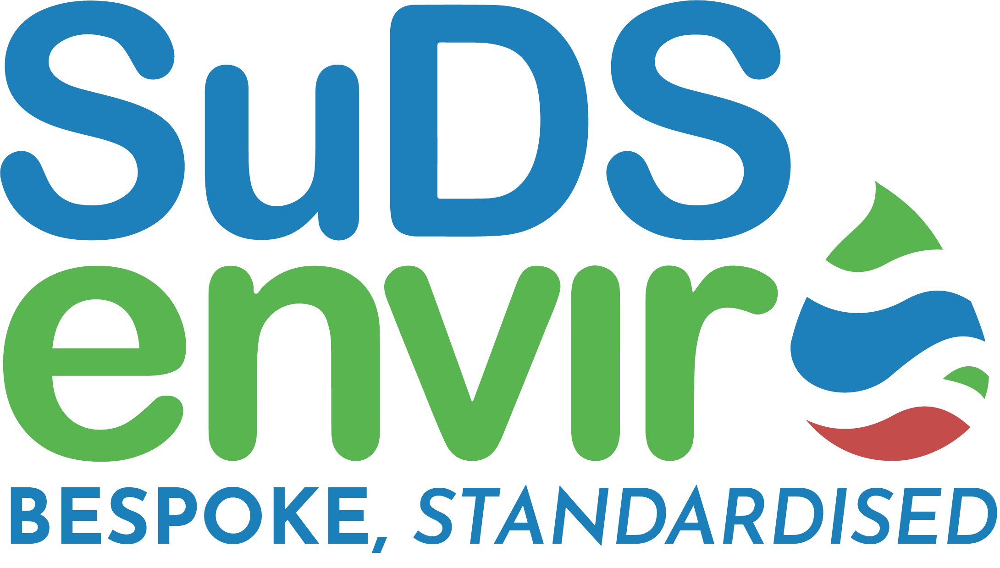

Engineered For Silt And Debris
Catch it early.
Keep it out of the system.
The SuDS RHINO SERS Series is specifically engineered for the efficient catchment and removal of silt and debris from impermeable or hard-surface areas, including paths, driveways, patios, roofs, car parks, roads and highways. A primary and secondary filtration system, paired with a removable silt bucket, improves downstream water quality and reduces flood risk.
Manufactured from High-Density Polyethylene using advanced extrusion and thermoforming technologies, SERS chambers are delivered fully assembled as a one-piece unit. Designed to handle both light-duty and full-traffic loading applications, they slot into any SuDS design for enhanced performance and environmental protection.
Available Diameters
Removable Silt Bucket
A removable silt bucket sits within the chamber as the secondary filtration stage, capturing fine sediment after the primary filtration. Routine maintenance is a simple lift-and-empty operation.
Dual-Stage Filtration
Two filters,
one clean output.
Primary filtration intercepts larger debris as water enters the chamber. Secondary filtration, via the removable silt bucket, captures finer sediments before water exits the chamber. The combined effect is cleaner flow downstream, fewer blockages, and longer service intervals for the entire system.
The thermoformed base enhances structural strength and anti-fracture properties, ensuring a robust and reliable installation even at full-traffic loading. The one-piece construction promotes sustainable site practice by reducing on-site assembly time and the environmental footprint of installation.
Design Advantages
Filtration
Primary + Secondary Stages
Dual filtration enhances silt and debris removal, improving downstream water quality.
Maintenance
Removable Silt Bucket
Fine sediment is captured in a removable silt bucket that can be lifted out for emptying.
Layout
Multi-Inlet Outlet Options
Flexible inlet and outlet orientation for project-specific configurations.
Custom
Bespoke Sump Depths
Standard and custom sump depths to suit catchment volume and maintenance cycles.
Durability
Anti-Fracture HDPE Base
Thermoformed base supports deeper installations with reduced fracture risk.
Hydraulics
Optimised Internal Flow
Smooth internal surfaces reduce blockage risk and promote continuous flow.

Specify With Confidence
Clean flow.
Simple maintenance.
The RHINO SERS Series captures silt and debris before they reach downstream drainage. The removable bucket turns maintenance into a two-minute task. Contact our technical team for sizing guidance.